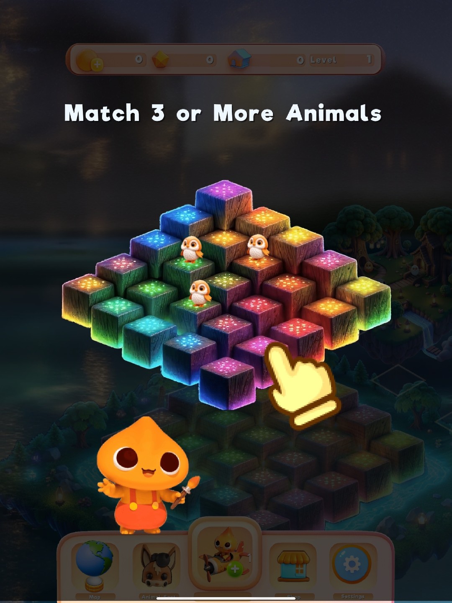
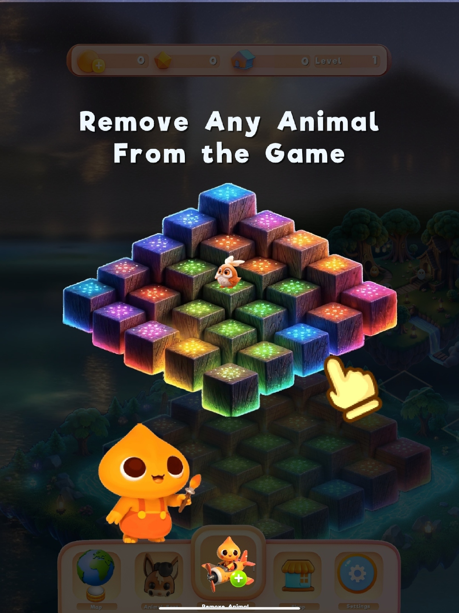
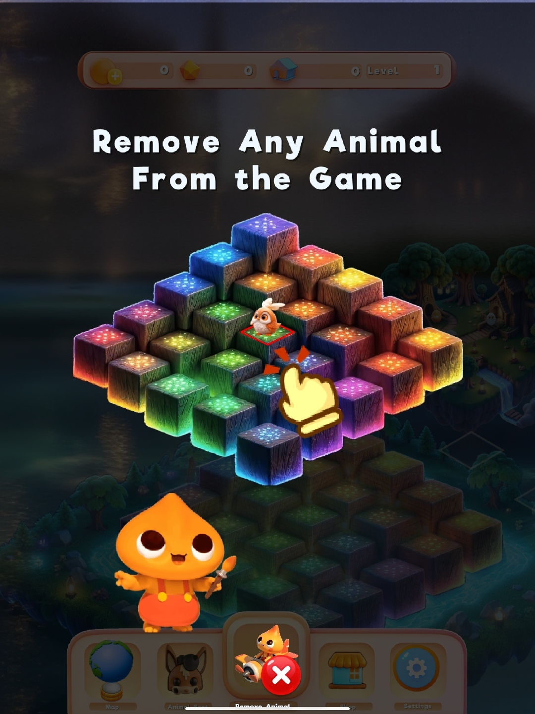
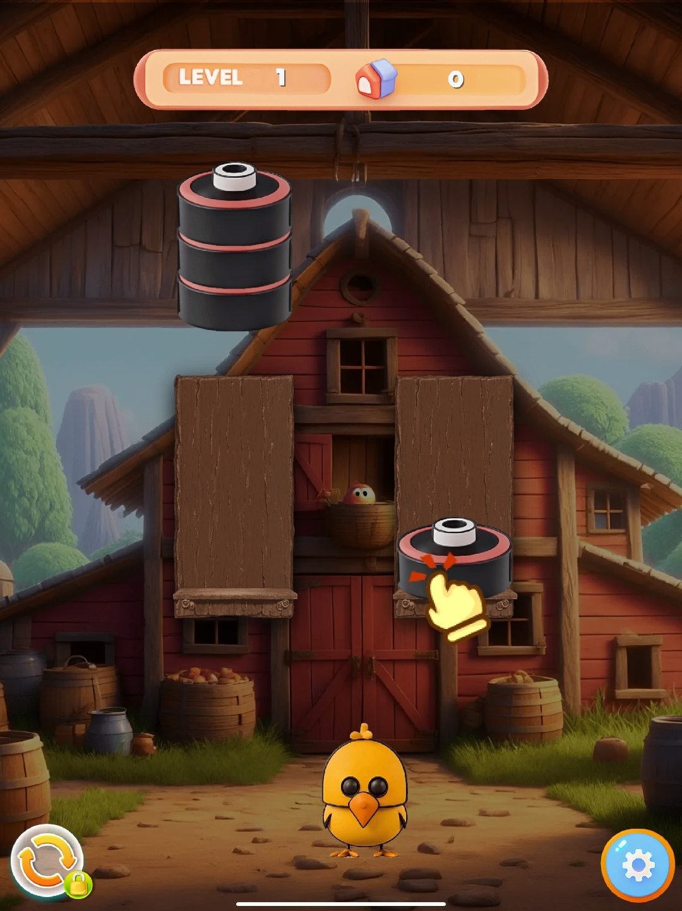
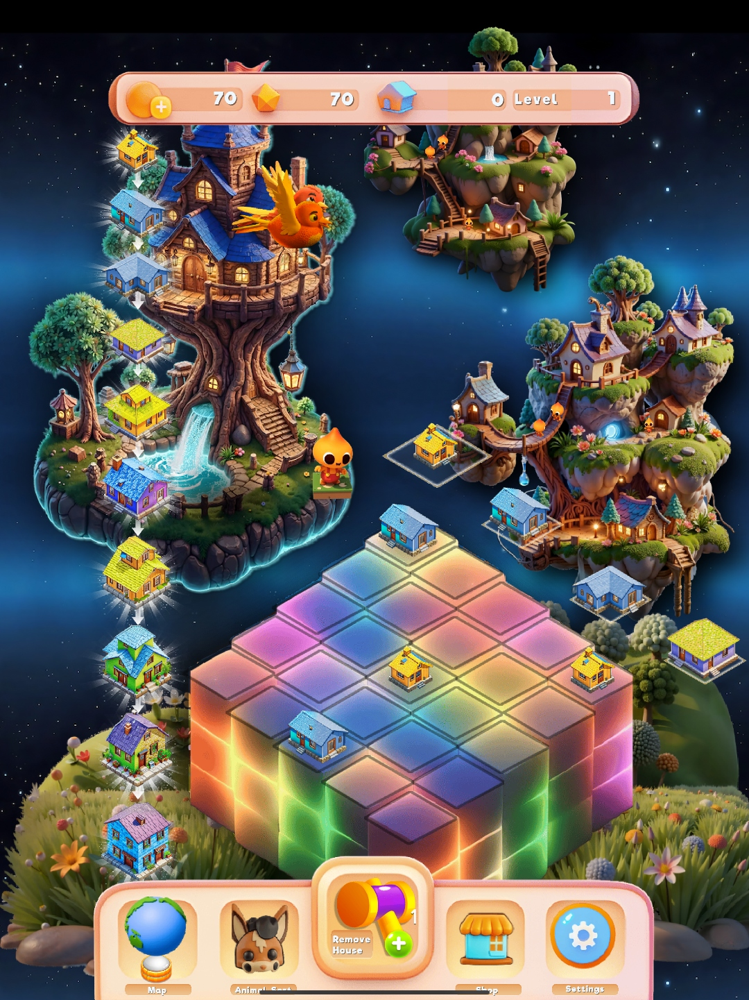
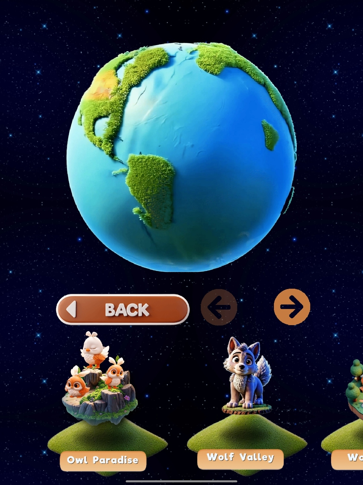
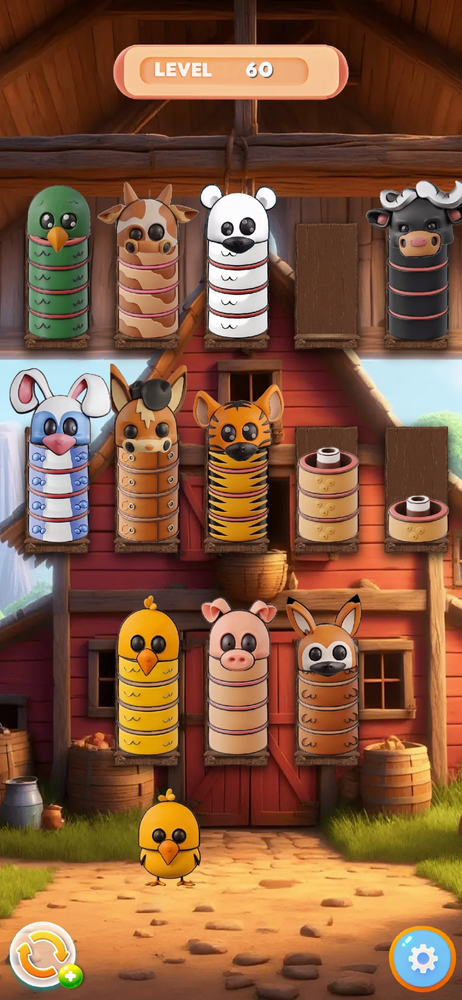
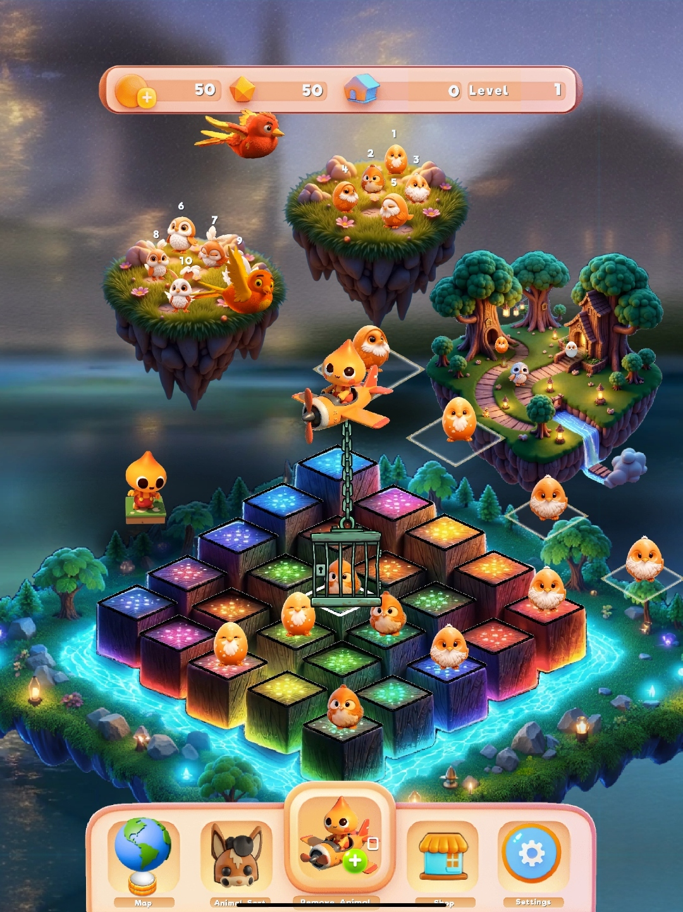
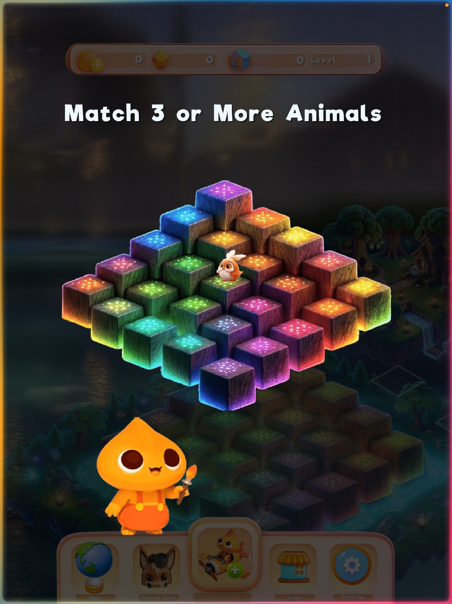
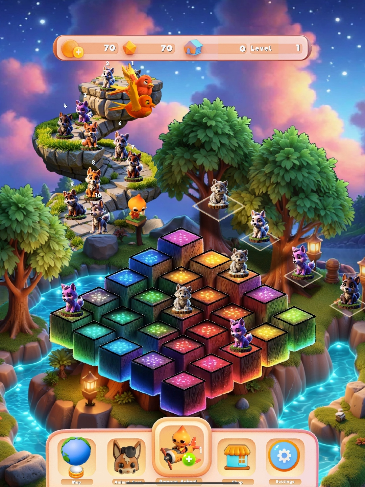

Welcome to Blobby’s World
Blobby’s Woodland Wonder is a family-friendly puzzle adventure from ListPull. Join Blobby, a cheerful woodland alchemist and builder, as you rescue animals, solve colorful 3D boards, sort animal stacks, and develop a growing woodland village.
Getting Started
Your first visit includes a guided tutorial. Follow the highlighted animal, board tile, and hand prompts before trying the full puzzle board on your own.
- Meet Blobby. Blobby introduces the puzzle board and the woodland animals that need help.
- Match animals. Select compatible animals to make a match of three or more and clear space on the board.
- Use a tool when needed. The Remove Animal tool clears one blocking animal so you can reopen a path to a match.



Game Modes
Blobby’s Woodland Wonder includes interconnected puzzle activities. Use the bottom menu and globe map to switch between available locations and modes.
Animal Match
Match groups of animals across a layered cube board surrounded by floating woodland islands.

Animal Sort
Move animal segments between stacks until every stack contains a single animal type.

Village Building
Merge matching houses to create increasingly developed homes for the woodland village.

World Map
Travel through themed wildlife biomes, including Owl Paradise and Wolf Valley.
Animal Match Mode
The Animal Match board is the main game mode shown when Blobby’s Woodland Wonder opens. Animals appear on a 3D arrangement of glowing cube tiles, with nearby islands showing the surrounding habitat and upcoming activity.
Goal
Create matches of three or more identical animals to remove them from the board, clear room for new moves, and progress through the level.
Build larger matches
Before making the first available move, scan the board for an opportunity to connect four or more compatible animals.
Protect open tiles
Do not fill your only easy-access tiles with animals that cannot be matched soon. Keeping space open makes recovery easier.
Read the board layers
Animals on elevated and recessed cubes can create visual bottlenecks. Prioritize moves that open the center of the board.
Save tools for blockers
Use Remove Animal when a single piece prevents a high-value match or has no realistic pairing path.
Animal Sort Mode
Access Animal Sort from the second button in the main-screen bottom menu. The game takes place in a rustic barn and plays like a ball-sort puzzle, except each vertical stack is made from animal-themed segments.
How to solve a board
- Identify the top segment. You can move only the exposed top segment from a stack.
- Move it to a legal destination. Use an empty stack or place it onto a compatible animal segment when permitted by the board.
- Complete a stack. Keep moving segments until every finished stack contains the parts of one animal only.
Strategy for advanced levels
As layouts become denser, treat one open stack as a buffer. Avoid filling every available stack immediately: an empty destination is often the difference between a solvable board and a dead end. On higher levels, work from the most constrained animals first and try to expose needed segments without burying them under unrelated pieces.

Power-Ups and Board Tools
Tools are designed to recover from blocked layouts without removing the satisfaction of planning the puzzle yourself.
Remove Animal
Tap the Remove Animal button, then select an animal on the board to clear it. This is most effective when the selected animal blocks a large match, occupies a critical tile, or has become isolated from compatible pieces.


Village Building Mode
Village Building uses the same satisfying cube-board structure as Animal Match, but swaps animals for houses. Combine matching homes to create a more developed woodland village.
House merging basics
- Place compatible houses. Arrange like houses so they can merge.
- Make a merge. Combining matching houses produces a higher-tier home.
- Plan your next tier. Preserve space near related houses so future merges remain possible.
World Map and Biomes
Tap the globe in the bottom menu to open Blobby’s world map. The map presents a living planet and a carousel of wildlife regions, allowing players to explore themed destinations as they become available.
Choose a biome
Swipe through the map, use the arrows, and select a destination such as Owl Paradise or Wolf Valley.

Play a destination
Each location can introduce different animals, level paths, and board themes.
Watch Blobby in Action
Explore quick gameplay videos covering the opening tutorial, Animal Sort puzzle strategy, woodland village building, and the world map.
First-Time Tutorial
Meet Blobby, learn how the puzzle board works, make an opening animal match, and see how the Remove Animal tool can clear a blocked tile.
Animal Sort Strategy
Learn how to organize mixed animal stacks, preserve a useful empty buffer stack, and solve more complex barn puzzles.
Village Building
Combine matching houses, create higher-tier buildings, and make room for new village upgrades across the colorful cube board.
World Map and Biomes
Travel from the globe menu into wildlife regions including Owl Paradise and Wolf Valley, then discover new puzzle destinations as they unlock.
Frequently Asked Questions
How do I make a match in the main board?
Match three or more of the same animal. Prioritize moves that leave open tiles and create room for future matches.
What should I do when the board feels blocked?
First look for a larger match or a move that opens a central tile. If one animal is preventing progress, use the Remove Animal tool strategically.
How does Animal Sort differ from the main board?
Animal Sort is a stack-management puzzle. Move exposed animal segments between stacks until each stack contains one animal type, using open stacks as temporary buffers.
Where can I find new game areas?
Open the globe menu in the bottom navigation and browse the available wildlife biomes on the world map.
Is Blobby’s Woodland Wonder available on iOS and Android?
Yes. Blobby’s Woodland Wonder is available for iPhone and iPad through the Apple App Store and for Android devices through Google Play .